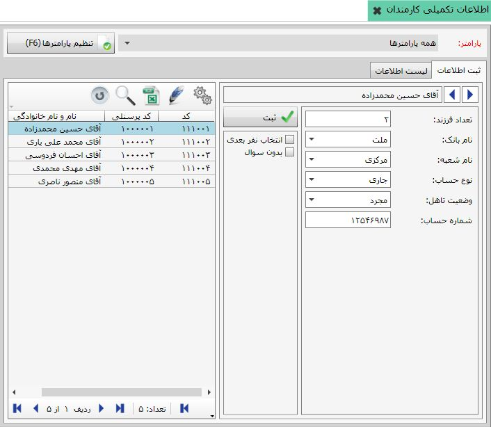
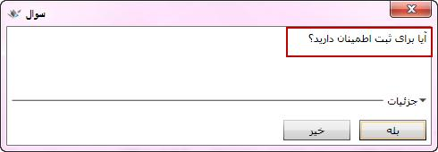

می توانید اطلاعات تکمیلی کارمندان را از جمله اطلاعات شخصی و اطلاعات حساب بانکی آن ها را در سیستم ثبت و نگهداری کنید. این کار را می توانید در صفحه «اطلاعات تکمیلی کارمندان» انجام دهید.
شکل بالا صفحه «اطلاعات تکمیلی کارمندان» را نمایش می دهد. مشاهده می کنید که این صفحه را در دو قسمت شماره گذاری کرده ایم، در قسمت سمت چپ لیست کارمندان تعریف شده در صفحه «معرفی کارمندان» قرار دارد. هر یک از اسامی موجود در این لیست را انتخاب کنید، نام آن شخص در کادر بالای قسمت سمت راست و کد پرسنلی وی نمایش داده می شود و شما می توانید در قسمت سمت راست اطلاعات تکمیلی آن کارمند را وارد کنید. بنابراین با انتخاب نام هر شخص از سمت چپ می توانید آن شخص را ویرایش کرده و جزئیات اطلاعات وی را در سمت راست وارد کنید و گزینه ثبت را بزنید تا اطلاعات وارد شده ثبت شود.
انتخاب نفر بعدی: در صورتی که این گزینه را تیک بزنید، با ثبت اطلاعات تکمیلی برای هر شخص، نام نفر بعدی از لیست سمت چپ در حالت انتخاب قرار می گیرد.
بدون سوال: هنگامی که اطلاعات تکمیلی را برای هر شخص ثبت می کنید پیغام زیر نمایش داده می شود که اطمینان شما را از ثبت اطلاعات سوال می کند:
اگر گزینه «بدون سوال» را فعال کنید دیگر در هنگام ثبت اطلاعات پنجره سوال فوق نمایش داده نمی شود و اطلاعات بدون سوال ثبت می گردد.